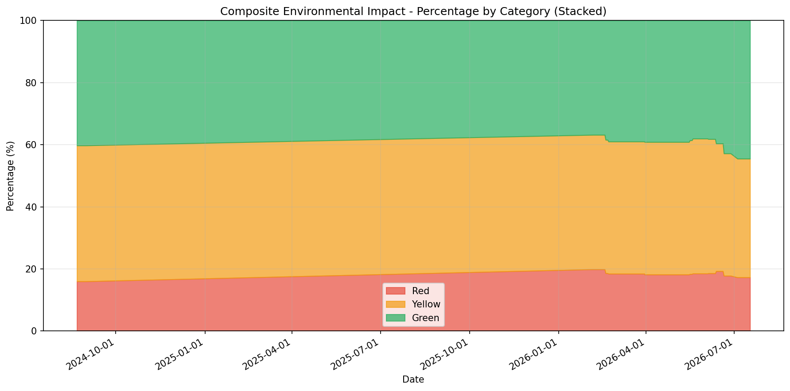
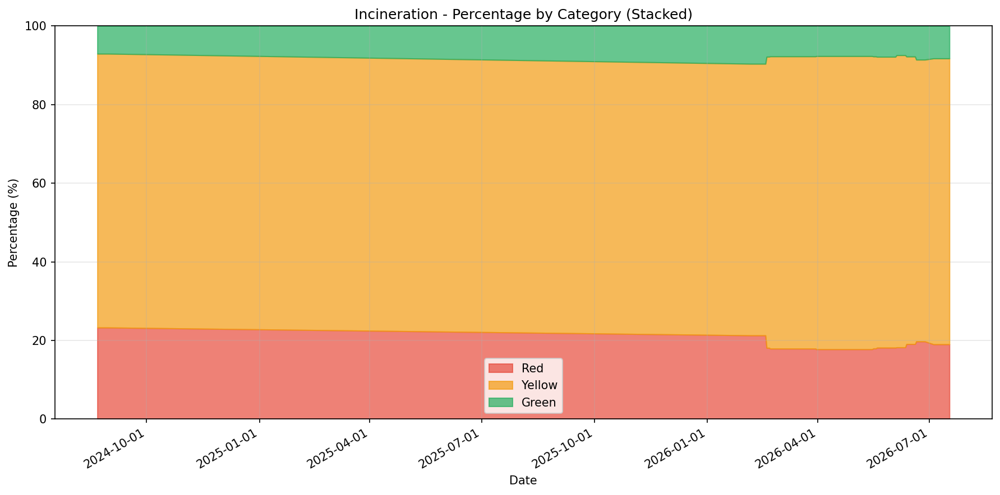
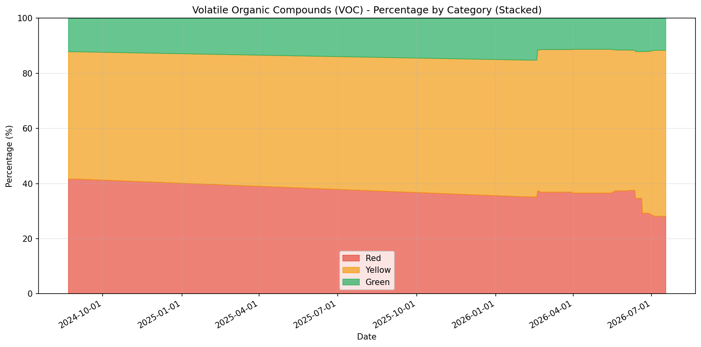
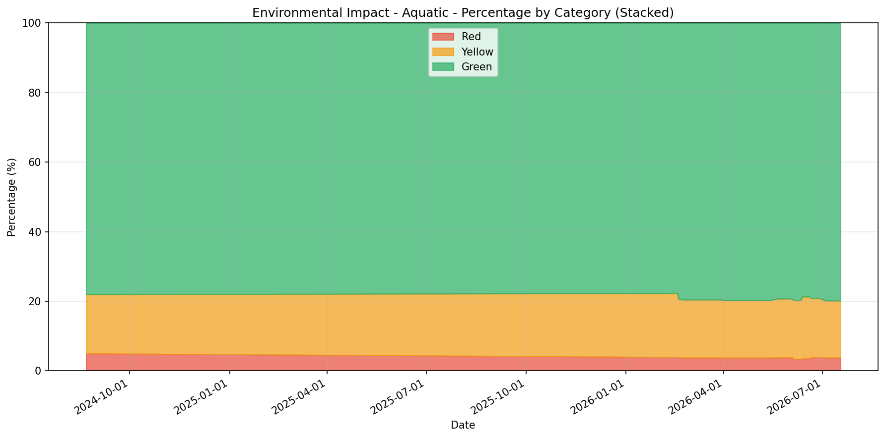
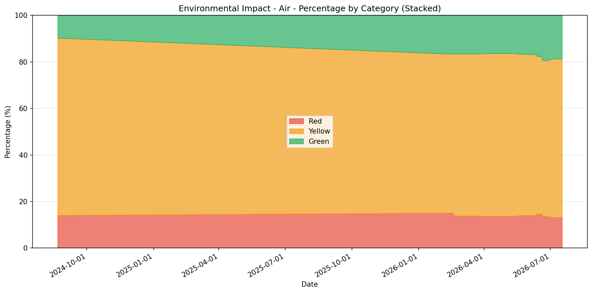
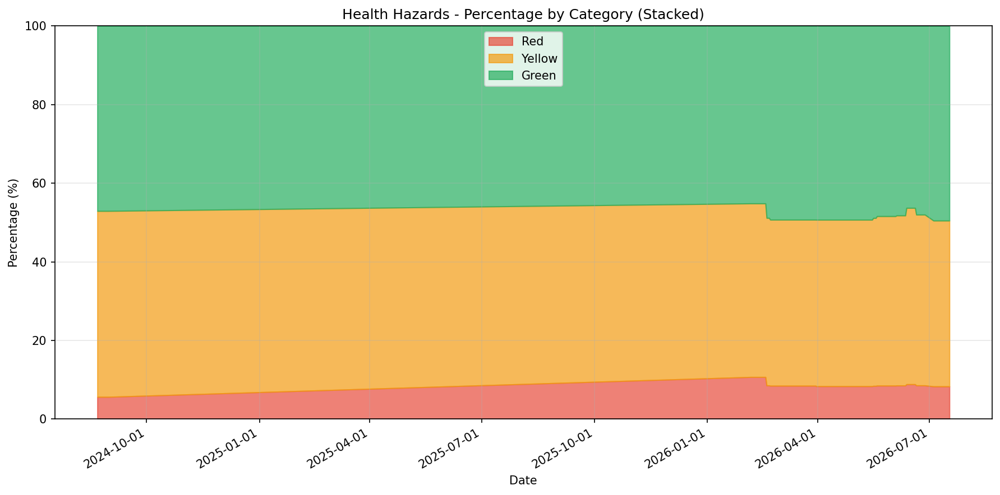

Laboratory chemical environmental impact tracking • Generated 2026-07-17 08:32:16
A normalised overall sustainability score combining environmental, health, safety, and emissions considerations into one decision-support classification.
Total Volume: 254.68 L
| Chemical | CAS | Volume (L) |
|---|---|---|
| Dimethyl Formamide | 68-12-2 | 13.50 |
| Diethyl Ether | 60-29-7 | 9.50 |
| Tetrahydrofuran | 109-99-9 | 5.55 |
| Hexane | 110-54-3 | 5.00 |
| Pentane | 109-66-0 | 2.50 |
| Petroleum Spirit | 8032-32-4 | 2.50 |
| Pyridine | 110-86-1 | 2.25 |
| Benzene | 71-43-2 | 1.00 |
| Dimethyl Acetamide | 127-19-5 | 1.00 |
| N-Methyl Pyrrolidone | 872-50-4 | 1.00 |
| Carbon Disulfide | 75-15-0 | 0.10 |
| 2,2,2-Trifluoroethanol | 75-89-8 | 0.03 |

| Timestamp | Red (L) | Yellow (L) | Green (L) | Total (L) |
|---|---|---|---|---|
| 2026-07-17 08:31:02.247000 | 43.93 | 97.39 | 113.36 | 254.68 |
| 2026-07-14 08:30:37.760000 | 43.93 | 97.39 | 113.36 | 254.68 |
| 2026-07-13 08:30:35.223000 | 43.93 | 97.39 | 113.36 | 254.68 |
| 2026-07-12 08:30:33.353000 | 43.93 | 97.39 | 113.36 | 254.68 |
| 2026-07-11 08:30:55.150000 | 43.93 | 97.39 | 113.36 | 254.68 |
| 2026-07-10 08:30:48.597000 | 43.93 | 97.39 | 113.36 | 254.68 |
| 2026-07-09 08:30:38.527000 | 43.93 | 97.39 | 113.36 | 254.68 |
| 2026-07-08 08:30:35.143000 | 43.93 | 97.39 | 113.36 | 254.68 |
| 2026-07-07 08:30:38.233000 | 43.93 | 97.39 | 113.36 | 254.68 |
| 2026-07-06 12:27:44.293000 | 43.93 | 97.39 | 113.36 | 254.68 |
How a solvent behaves during thermal destruction, including combustion emissions risk and energy profile, to distinguish cleaner-burning solvents from those likely to generate harmful by-products.
Total Volume: 202.68 L
| Chemical | CAS | Volume (L) |
|---|---|---|
| Dimethyl Formamide | 68-12-2 | 13.50 |
| Chloroform | 67-66-3 | 8.50 |
| Acetonitrile | 75-05-8 | 5.50 |
| Dichloromethane | 75-09-2 | 3.50 |
| Pyridine | 110-86-1 | 2.25 |
| Dimethyl Sulphoxide | 67-68-5 | 2.15 |
| Acetic Acid (Glacial) | 64-19-7 | 1.00 |
| Dimethyl Acetamide | 127-19-5 | 1.00 |
| N-Methyl Pyrrolidone | 872-50-4 | 1.00 |
| Trifluoroacetic Acid | 76-05-1 | 0.07 |
| 2,2,2-Trifluoroethanol | 75-89-8 | 0.03 |

| Timestamp | Red (L) | Yellow (L) | Green (L) | Total (L) |
|---|---|---|---|---|
| 2026-07-17 08:31:02.247000 | 38.51 | 147.43 | 16.75 | 202.68 |
| 2026-07-14 08:30:37.760000 | 38.51 | 147.43 | 16.75 | 202.68 |
| 2026-07-13 08:30:35.223000 | 38.51 | 147.43 | 16.75 | 202.68 |
| 2026-07-12 08:30:33.353000 | 38.51 | 147.43 | 16.75 | 202.68 |
| 2026-07-11 08:30:55.150000 | 38.51 | 147.43 | 16.75 | 202.68 |
| 2026-07-10 08:30:48.597000 | 38.51 | 147.43 | 16.75 | 202.68 |
| 2026-07-09 08:30:38.527000 | 38.51 | 147.43 | 16.75 | 202.68 |
| 2026-07-08 08:30:35.143000 | 38.51 | 147.43 | 16.75 | 202.68 |
| 2026-07-07 08:30:38.233000 | 38.51 | 147.43 | 16.75 | 202.68 |
| 2026-07-06 12:27:44.293000 | 38.51 | 147.43 | 16.75 | 202.68 |
The tendency to release volatile organic compounds under normal handling, estimated from volatility indicators like vapour pressure and boiling point.
Total Volume: 202.68 L
| Chemical | CAS | Volume (L) |
|---|---|---|
| Acetone | 67-64-1 | 10.00 |
| Methanol | 67-56-1 | 10.00 |
| Diethyl Ether | 60-29-7 | 9.50 |
| Chloroform | 67-66-3 | 8.50 |
| Tetrahydrofuran | 109-99-9 | 5.55 |
| Hexane | 110-54-3 | 5.00 |
| Dichloromethane | 75-09-2 | 3.50 |
| Pentane | 109-66-0 | 2.50 |
| Petroleum Spirit | 8032-32-4 | 2.50 |
| Carbon Disulfide | 75-15-0 | 0.10 |

| Timestamp | Red (L) | Yellow (L) | Green (L) | Total (L) |
|---|---|---|---|---|
| 2026-07-17 08:31:02.247000 | 57.15 | 122.11 | 23.42 | 202.68 |
| 2026-07-14 08:30:37.760000 | 57.15 | 122.11 | 23.42 | 202.68 |
| 2026-07-13 08:30:35.223000 | 57.15 | 122.11 | 23.42 | 202.68 |
| 2026-07-12 08:30:33.353000 | 57.15 | 122.11 | 23.42 | 202.68 |
| 2026-07-11 08:30:55.150000 | 57.15 | 122.11 | 23.42 | 202.68 |
| 2026-07-10 08:30:48.597000 | 57.15 | 122.11 | 23.42 | 202.68 |
| 2026-07-09 08:30:38.527000 | 57.15 | 122.11 | 23.42 | 202.68 |
| 2026-07-08 08:30:35.143000 | 57.15 | 122.11 | 23.42 | 202.68 |
| 2026-07-07 08:30:38.233000 | 57.15 | 122.11 | 23.42 | 202.68 |
| 2026-07-06 12:27:44.293000 | 57.15 | 122.11 | 23.42 | 202.68 |
Potential impact on aquatic ecosystems based on acute/chronic toxicity and biodegradation, separating readily degradable lower-risk solvents from persistent or highly toxic ones.
Total Volume: 202.68 L
| Chemical | CAS | Volume (L) |
|---|---|---|
| Hexane | 110-54-3 | 5.00 |
| Pentane | 109-66-0 | 2.50 |
| N,N-Dimethylaniline | 121-69-7 | 0.10 |

| Timestamp | Red (L) | Yellow (L) | Green (L) | Total (L) |
|---|---|---|---|---|
| 2026-07-17 08:31:02.247000 | 7.60 | 33.21 | 161.88 | 202.68 |
| 2026-07-14 08:30:37.760000 | 7.60 | 33.21 | 161.88 | 202.68 |
| 2026-07-13 08:30:35.223000 | 7.60 | 33.21 | 161.88 | 202.68 |
| 2026-07-12 08:30:33.353000 | 7.60 | 33.21 | 161.88 | 202.68 |
| 2026-07-11 08:30:55.150000 | 7.60 | 33.21 | 161.88 | 202.68 |
| 2026-07-10 08:30:48.597000 | 7.60 | 33.21 | 161.88 | 202.68 |
| 2026-07-09 08:30:38.527000 | 7.60 | 33.21 | 161.88 | 202.68 |
| 2026-07-08 08:30:35.143000 | 7.60 | 33.21 | 161.88 | 202.68 |
| 2026-07-07 08:30:38.233000 | 7.60 | 33.21 | 161.88 | 202.68 |
| 2026-07-06 12:27:44.293000 | 7.60 | 33.21 | 161.88 | 202.68 |
Impact on air quality based on factors such as photochemical ozone creation potential, odour effects, and volatility, including relevant atmospheric hazard considerations.
Total Volume: 202.99 L
| Chemical | CAS | Volume (L) |
|---|---|---|
| Diethyl Ether | 60-29-7 | 9.50 |
| Tetrahydrofuran | 109-99-9 | 5.55 |
| Toluene | 108-88-3 | 5.00 |
| Triethylamine | 121-44-8 | 2.75 |
| Pyridine | 110-86-1 | 2.25 |
| 1-Butanol | 71-36-3 | 1.60 |

| Timestamp | Red (L) | Yellow (L) | Green (L) | Total (L) |
|---|---|---|---|---|
| 2026-07-17 08:31:02.247000 | 26.65 | 138.53 | 37.81 | 202.99 |
| 2026-07-14 08:30:37.760000 | 26.65 | 138.53 | 37.81 | 202.99 |
| 2026-07-13 08:30:35.223000 | 26.65 | 138.53 | 37.81 | 202.99 |
| 2026-07-12 08:30:33.353000 | 26.65 | 138.53 | 37.81 | 202.99 |
| 2026-07-11 08:30:55.150000 | 26.65 | 138.53 | 37.81 | 202.99 |
| 2026-07-10 08:30:48.597000 | 26.65 | 138.53 | 37.81 | 202.99 |
| 2026-07-09 08:30:38.527000 | 26.65 | 138.53 | 37.81 | 202.99 |
| 2026-07-08 08:30:35.143000 | 26.65 | 138.53 | 37.81 | 202.99 |
| 2026-07-07 08:30:38.233000 | 26.65 | 138.53 | 37.81 | 202.99 |
| 2026-07-06 12:27:44.293000 | 26.65 | 138.53 | 37.81 | 202.99 |
Inherent health risk profile using GHS classifications, exposure limits, and toxicological endpoints across acute and chronic effects.
Total Volume: 256.93 L
| Chemical | CAS | Volume (L) |
|---|---|---|
| Dimethyl Formamide | 68-12-2 | 13.50 |
| Petroleum Spirit | 8032-32-4 | 2.50 |
| Pyridine | 110-86-1 | 2.25 |
| Benzene | 71-43-2 | 1.00 |
| Dimethyl Acetamide | 127-19-5 | 1.00 |
| N-Methyl Pyrrolidone | 872-50-4 | 1.00 |
| 2,2,2-Trifluoroethanol | 75-89-8 | 0.03 |

| Timestamp | Red (L) | Yellow (L) | Green (L) | Total (L) |
|---|---|---|---|---|
| 2026-07-17 08:31:02.247000 | 21.28 | 108.40 | 127.25 | 256.93 |
| 2026-07-14 08:30:37.760000 | 21.28 | 108.40 | 127.25 | 256.93 |
| 2026-07-13 08:30:35.223000 | 21.28 | 108.40 | 127.25 | 256.93 |
| 2026-07-12 08:30:33.353000 | 21.28 | 108.40 | 127.25 | 256.93 |
| 2026-07-11 08:30:55.150000 | 21.28 | 108.40 | 127.25 | 256.93 |
| 2026-07-10 08:30:48.597000 | 21.28 | 108.40 | 127.25 | 256.93 |
| 2026-07-09 08:30:38.527000 | 21.28 | 108.40 | 127.25 | 256.93 |
| 2026-07-08 08:30:35.143000 | 21.28 | 108.40 | 127.25 | 256.93 |
| 2026-07-07 08:30:38.233000 | 21.28 | 108.40 | 127.25 | 256.93 |
| 2026-07-06 12:27:44.293000 | 21.28 | 108.40 | 127.25 | 256.93 |